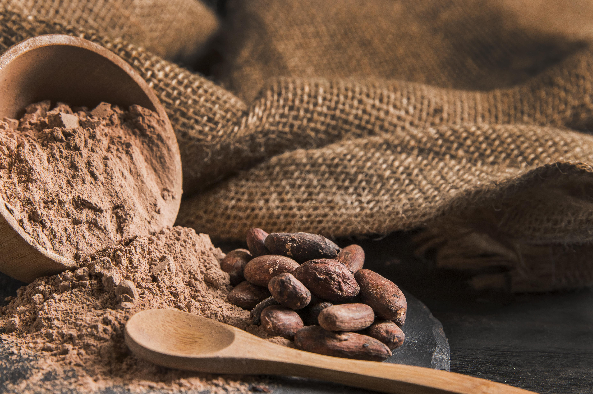

Un grano de cacao es la semilla fermentada y secada del Theobroma cacao, del cual se extraen los sólidos de cacao y la manteca de cacao. Los granos son la base del chocolate, como también diversas comidas Mesoamericanas como la salsa de mole y el tejate.
Mientras que las semillas son generalmente blancas, se hacen violetas o un marrón rojizo durante el proceso de secado. La excepción son variedades raras de cacao blanco, en que las semillas se mantienen blancas. Históricamente, el cacao blanco fue cultivado por el pueblo Rama en Nicaragua.
